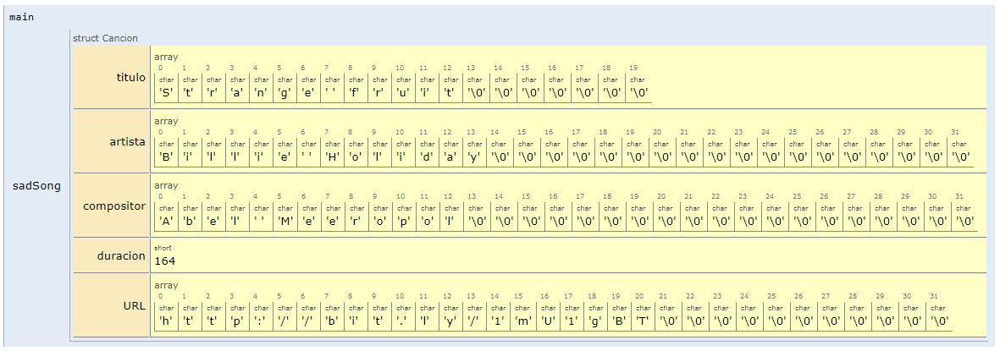
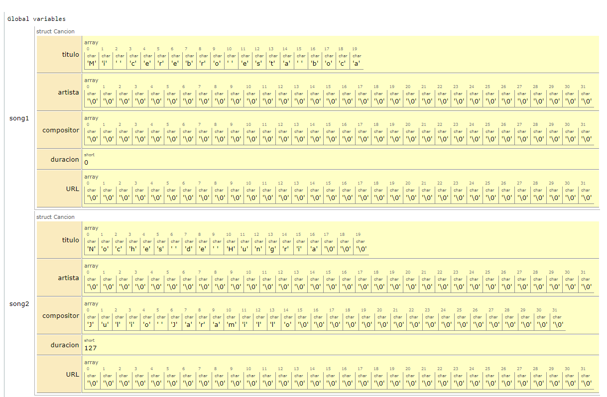

Anteriormente vimos que los arrays esta una coleccion de datos de un mismo tipo agrupados bajo un mismo nombre. C, pese a no ser un lenguaje de programacion orientado a objetos maneja un tipo de dato compuesto conocido como estructura. En si, una estructura es lo mas cercano a la definición que conocemos de clase en los lenguajes de programación, la unica diferencia respecto a las clases (sin hablar en el sentido estricto de la palabra), es que una estructura es como una clase con miembros pero sin metodos.
La mayor ventaja de estas, es que permiten la creacion de nuevos tipos de datos, liberando al programador de tener que restringirse al uso de los tipos de datos tipicos ofrecidos por el lenguaje como tal (int, double, float, etc.) lo cual hace posible organizar datos complicados, particularmente en largos programas.
Una estructura, es una coleccion de variables agrupadas bajo un mismo nombre. Las variables dentro de una estructura se denominan como miembros y pueden ser accedidas de manera individual en caso de ser necesario.
En resumen:
Una estructura puede contener cualquier número de miembros.
Los miembros de la estructura pueden ser de cualquier tipo.
Mediante estructuras es posible tratar como grupo cualquier conjunto de variables relacionadas.
Las estructuras facilitan la organización de datos complicados.
Las variables de estructuras se pueden definir de dos formas:
Listándolas inmediatamente después de la llave de cierre de la llave de cierre de la declaración de la estructura, algo como esto tal y como se muestra en el siguiente codigo en el cual se declaran dos variables (book1 y book2) tipo structBook (simulación):
Listando el tipo de la estructura seguida por las variables correspondientes en cualquier lugar del programa antes de utilizarlas, así, asumiendo que la estructura está declarada. El siguiente codigo muestra esto, notese que la declaración de las variables (book1 y book2) es similar a la declaración para datos no estructurados (int, double, etc), aquí, la unica difetencia es que estas serán para el caso datos tipo structBook (simulación):
Los conceptos aplicados para los tipos de datos simples aplican para estructuras tambien; de modo que, es posible crear variables normales, arrays, matrices y apuntadores de estructuras entre otros.
Empleando la estructura tipo Punto2D crear las siguientes variables:
Dos variables llamadas p1 y p2 (local).
Un array de 3 elementos llamado vP (local).
Un apuntador llamado *ptrP que apunte a p[1] (global).
Una matrix de 2x2 llamada mP (global).
La solución se muestra a continuación (simulación):
#include<stdio.h>structPunto2D{floatx;floaty;};// Datos tipo Punto2D globalesstructPunto2DvP[3];structPunto2DmP[2][2];intmain(){// Datos tipo Punto2D localesstructPunto2Dp1,p2;structPunto2D*ptrP=&vP[1];return0;}
A continuación, se muestra el resultado en memoria de la ejecución del código anterior:
Al igual que para el caso de las variables simples, las estructuras pueden tener valores iniciales una vez se declaran. Como estas con estructuras compuestas, lo que se hace para inicializarlas, es inicializar miembro por miembro. A continuacion se describen las dos formas de llevar a cabo esto.
Esta es similar a la empleada para los arrays, y lo que se hace es inicializar cada miembro de la estructura con el correspondiente valor inicial asociado. Cada valor inicial es separado por coma (,). Veamos.
Ejemplo: Iniciar la estructura Cancion con la siguiente informacion asociada a una cancion de Billie Holiday. A continuacion se muestra el codigo:
#include<stdio.h>// Declaracion de la estructurastructCancion{chartitulo[20];charartista[32];charcompositor[32];shortduracion;charURL[32];};// Funcion main intmain(){// Inicializacion de la variable (sadSong) tipo struct Cancion structCancionsadSong={"Strange fruit","Billie Holiday","Abel Meeropol",164,"http://bit.ly/1mU1gBT"};return0;}
La simulación del código anterior, se muestra a continuación:
A continuacion se muestra como quedan las estructura tipo Cancion (sadSong) al ejecutarse el codigo:

Fig. 55 Estructuras tipo cancion (variable sadSong).#
2.3.2. Inicialización específica de cada uno de los miembros#
Básicamente, consiste en la designación de cada uno de los miembros siguiendo la siguiente forma.
.miembro=valor;// designador
Ejemplo: Realizar la misma inicilizacion del caso anterior, pero en este caso emplear la inicializacion especifica de miembros:
#include<stdio.h>// Declaracion de la estructurastructCancion{chartitulo[20];charartista[32];charcompositor[32];shortduracion;charURL[32];};// Funcion main intmain(){// Inicializacion de la variable (sadSong) tipo struct Cancion structCancionsadSong={.titulo="Strange fruit",.artista="Billie Holiday",.compositor="Abel Meeropol",.duracion=164,.URL="http://bit.ly/1mU1gBT"};return0;}
La simulación del código anterior, se puede realizar a continuación:
Note, que el resultado es el mismo que el mostrado para el ejemplo de inicializacón anteriormente realizado.
2.3.3. Caso en el que no se inicializan todos lo miembros#
Ya sea que se emplee una u otra de las formas anteriormente mencionadas, es posible inicializar parcialmente una variable tipo estructura, para ello, basta con no pasar todos los elementos que puede contener la lista de inicialización. A continuación se muestra un ejemplo:
Ejemplo: Crear dos variables tipo structCancion, estas variables no tendran todos los parametros inicialidos:
#include<stdio.h>// Declaracion de la estructurastructCancion{chartitulo[20];charartista[32];charcompositor[32];shortduracion;charURL[32];};// Variables globales tipo struct CancionstructCancionsong1={"Mi cerebro esta boca abajo"};structCancionsong2={.titulo="Noches de Hungria",.compositor="Julio Jaramillo",.duracion=127};// Funcion main intmain(){return0;}
La simulación del código se muestra a continuación:
En la siguiente figura se muestra el resultado del codigo anterior, notese lo que sucede como quedan los miembros que no fueron inicializados.

Fig. 56 Variables tipo cancion sin inicializar todos sus miembros.#